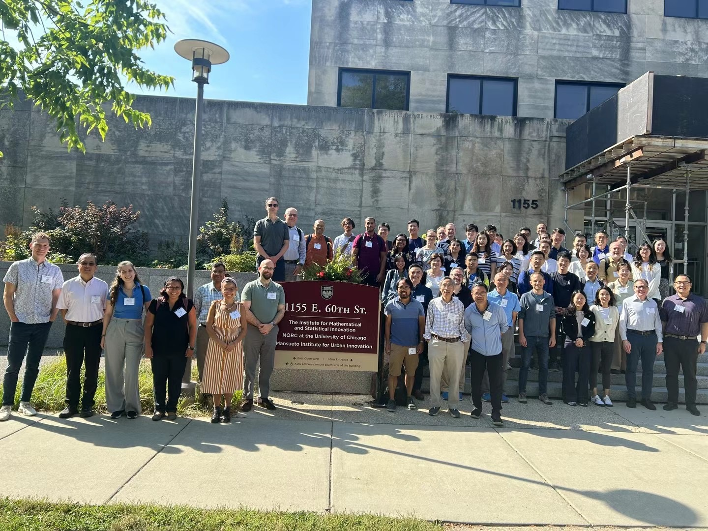

The "Challenges in Neuroimaging Data Analysis" conference brought together leading experts in the field to discuss the latest advancements and address the complex challenges in analyzing neuroimaging data. From deep learning techniques to advanced statistical modeling, each session aimed to explore innovative methods and foster collaboration among researchers, clinicians, and data scientists. This webpage serves as a showcase of the conference's insightful talks, featuring session videos and detailed information about the presented topics.

Conference Videos
Chair: Jian Kang
Talks and Speakers:
“Graph Neural Networks for Brain Connectome Analysis,” Carl Yang (Emory University)
“Dynamic resting state functional connectivity: A time-varying dynamic network model,” Fei Jiang (University of California)
“Doubly Adaptive Spatial Quantile Regression for Neuroimaging Data,” Linglong Kong (University of Alberta)
“Deciphering Relationships between Massive High-Dimensional Imaging Responses and Scalar Predictors: A Distributed Learning Approach,” Lily Wang (George Mason University)
Chair: Tingting Zhang
Talks and Speakers:
“Changepoint Analysis in a Mixed Model Framework, With Applications to fMRI Time Series,” Mark Fiecas (University of Minnesota)
“The hidden cost of stringent motion scrubbing,” Amanda Mejia (Indiana University)
“Statistical Brain Network Analysis: Recent Developments and Future Directions,” Sean Simpson (Wake Forest University)
“Analysis of Functional Connectivity Changes from Childhood to Old Age,” Tingting Zhang (University of Pittsburgh)
Chair: Sean Simpson
Talks and Speakers:
“Processing Induced Correlation in FMRI Data,” Daniel Rowe (Marquette University)
“Sliding windows analysis can undo the effects of preprocessing when applied to fMRI,” Martin Lindquist (Johns Hopkins University)
“A Hidden Semi-Markov Model Approach to State-Based Dynamic Brain Network Analyses: Recent Developments and Future Directions,” Heather Shappell (Wake Forest University School of Medicine)
“Utilizing Invariance and Exchangeability in Neuroimaging Data Analysis,” Yi Zhao (Indiana University)
Chair: Eardi Lila
Panelists:
Robert Kass (Carnegie Mellon University)
Tianwen Ma (Emory University)
Jun Young Park (University of Toronto)
Chair: Tingting Zhang
Talks and Speakers:
“Longitudinal Manifold Learning for Modeling Shapes in Alzheimer’s Disease,” Ani Eloyan (Brown University)
“The Missing Link: Establishing the Parallels Between Censored Covariate and Missing Data,” Tanya Garcia (University of North Carolina at Chapel Hill)
“Some Recent and Ongoing Work on Intracranial Neurodata Analysis,” Lexin Li (University of California, Berkeley)
“Orthogonal Common-Source and Distinctive-Source Decomposition Between High-Dimensional Data Views,” Hai Shu (New York University)
Chair: John Kornak
Talks and Speakers:
“Statistical Regularization Used to Study Brain Structure, Function, and Connectivity: Current Work and Future Directions,” Jaroslaw Harezlak (Indiana University Bloomington)
“Disease Progression Modeling for Frontotemporal Dementia,” John Kornak (University of California)
“Statistical Challenges in Analysis of Tau PET Imaging Data in Alzheimer’s Disease,” Dana Tudorascu (University of Pittsburgh)
“Multidimensional Biomarker Landscape in Alzheimer’s Disease: Insights for Improved Disease Modeling and Clinical Trial Design,” Duygu Tosun-Turgut (University of California)
Chair: Jian Kang
Talks and Speakers:
“Bayes in Neuroscience: Addressing Key Research Challenges with Single and Multi-Object Data,” Sharmistha Guha (Texas A&M University)
“Challenges in Functional Near-Infrared Spectroscopy,” Timothy Johnson (University of Michigan)
“Bayesian Methods in EEG-Based Brain-Computer Interfaces,” Tianwen Ma (Emory University)
“Opportunities and Challenges in the Analysis of Event-Related Potentials,” Marina Vannucci (Rice University)
Chair: Chao Huang
Panelists:
Tom Nichols (University of Oxford)
Li Shen (University of Pennsylvania)
Dana Tudorascu (University of Pittsburgh)
Wesley Thompson (Laureate Institute for Brain Research)